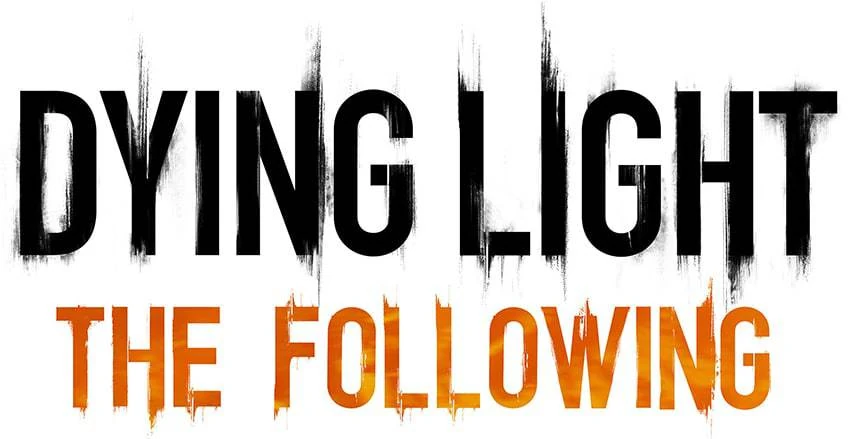

Это страница про дополнение игры Dying Light
Dying Light: The Follow — это пакет расширения для игры ужасов выживания Dying Light, вышедшей в 2015 году . Игра была разработана компанией Techland , издана Warner Bros. Interactive Entertainment и выпущена для Linux , Windows , PlayStation 4 и Xbox One 9 февраля 2016 года. В расширении добавлены персонажи, сюжетная кампания, оружие и игровая механика. Действие происходит на карте, которая вдвое больше, чем две предыдущие карты Dying Light Геймплей The Follow аналогичен игровому процессу в основной игре, где зараженные медлительны и хрупки в дневное время и становятся агрессивными. и быстро в ночное время. Игроки могут использовать движения паркура , такие как лазание по уступам, прыжки, скольжение, прыжки и зиплайнинг, чтобы перемещаться между местами и убивать врагов. Одной из новых функций является управляемый багги для дюн . Игроки могут использовать их, чтобы быстро путешествовать по игровому миру и уничтожать врагов. У него есть собственное отдельное дерево навыков, и к багги можно добавить оружие, включая шипы, огнеметы , ультрафиолетовые лампы , электрические клетки и другие улучшения для повышения его боевых способностей. На производительность и эффективность багги влияют такие факторы, как мощность подвески , двигателя и тормозов. Игроки также могут выбирать из 40 различных раскрасок, чтобы персонализировать свою машину [8] , и должны собирать топливо, чтобы управлять багги.
